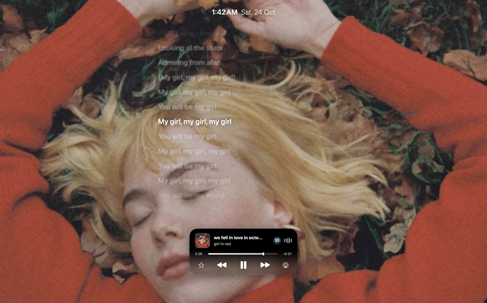
Art. Alive.
Let your music fill the screen.
YOUR MAC, WITH PERSONALITY
Your Mac. More you.
Your music. Your tools. Your own little world.
All starting at the notch.
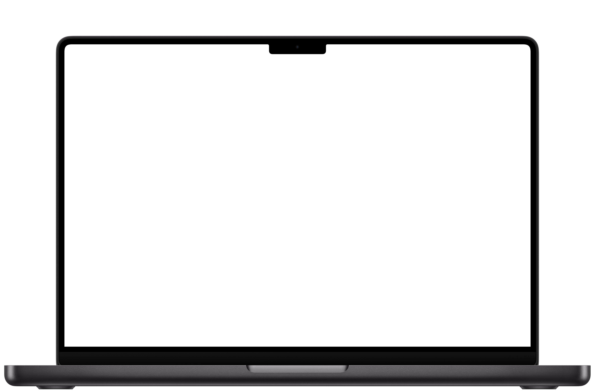
A little scroll. A whole new perspective.
ORDINARY? NOT YOUR MAC.
One little notch. A whole new feeling.
SMALL SPACE. BIG PERSONALITY.
Play a song. Drop a file. Find your focus.
One island that changes with your day.
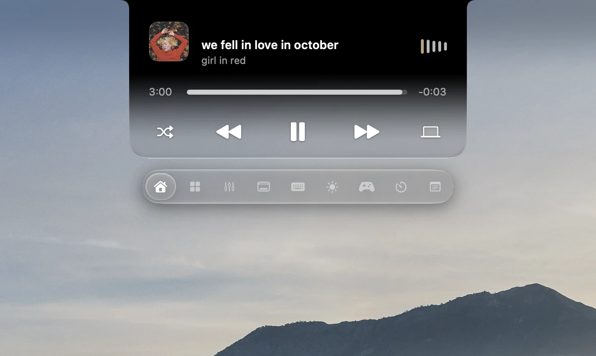
Playback, progress and a glance at what’s playing.
Right above everything else.
A LITTLE SPACE. AN ENTIRE WORLD.
Control music. Keep files close.
All from one little island.
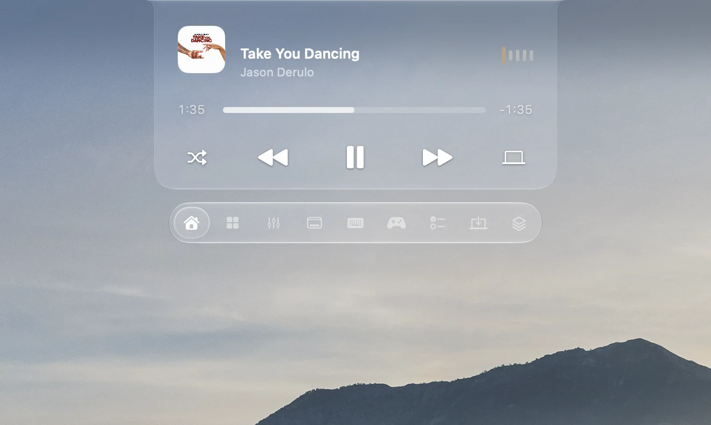
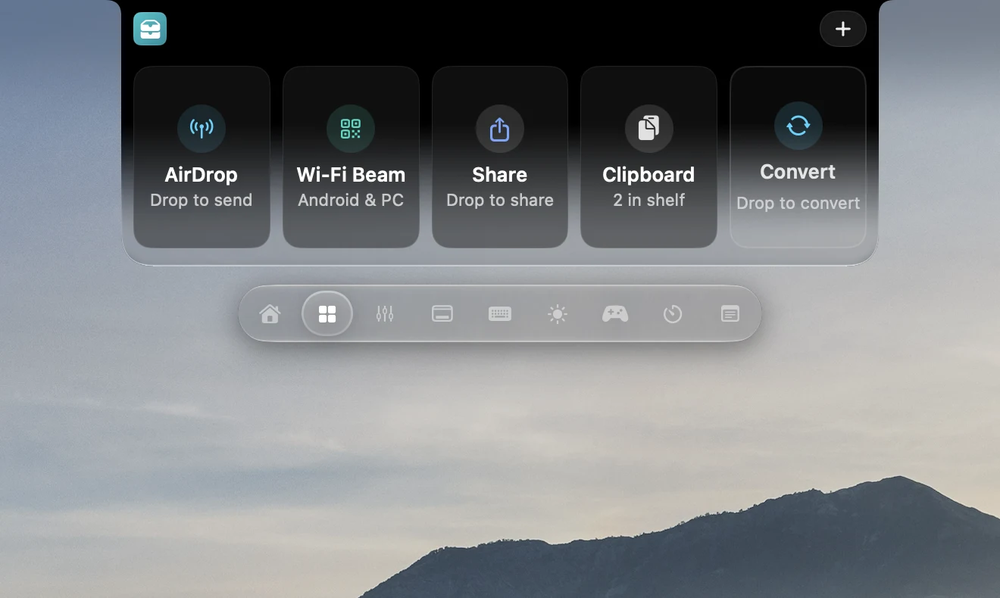
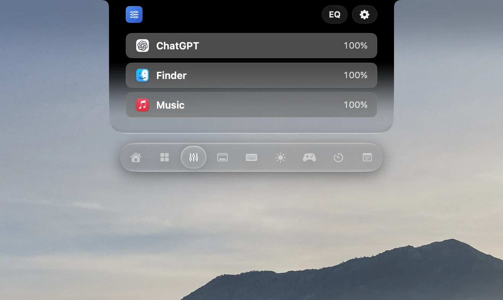
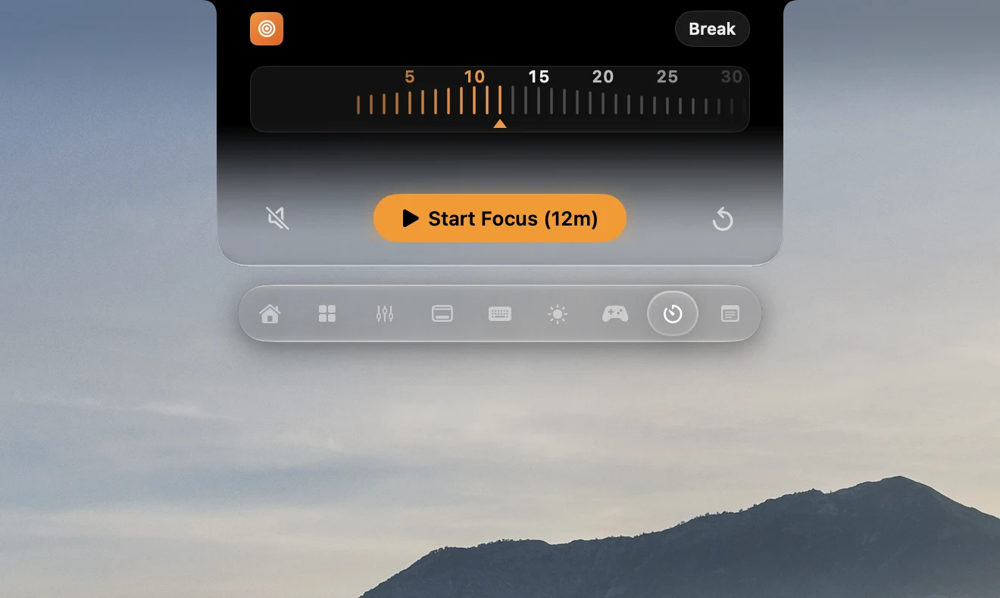
We fell in love in October
That's why, I love fall
Looking at the stars
Admiring from afar
My girl, my girl, my girl
You will be my girl
My girl, my girl, my girl
You will be my world
My girl, my girl, my girl
You will be my girl

Let your music fill the screen.
Follow the moment.
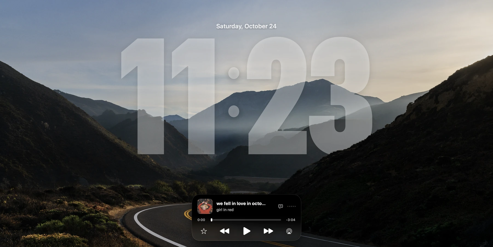
Your still wallpaper. Layered with time.
Motion art and lyrics depend on the track. Clock depth supports still wallpapers.
A FAMILIAR FACE.
Meet Zenith’s camera-based face unlock.
Monday, October 26
9:41Interactive preview · No camera access
Zenith uses your Mac’s camera. This is a simulated preview, not Apple’s hardware Face ID.
A LITTLE LESS TO PAY FOR.
Select the apps you use. Explore the overlap.
Overlapping everyday features, not full replacements. Yoink includes a dedicated shelf workflow; AirBuddy offers broader device management and automation; SoundSource includes audio effects and more advanced controls. Choose tools for the features you need. This total is the current cost to buy the selected apps, not a refund or guaranteed saving.
USD purchase prices checked October 26, 2026. Taxes, upgrades, regional prices and subscriptions may differ. Follow each vendor link for current terms. Zenith is currently free to download; no future pricing guarantee is implied.
SOUND THAT KNOWS YOU
Your headphones. Your saved EQ. Automatically.
Native Music window · Original Zenith AirPods animation · Illustrative profiles
THE VIEW IS YOURS.
Pick a font. Add some depth.
Make your lock screen feel like you.
YOUR WALLPAPER. YOUR CLOCK.
Scroll from Modern to Rounded to Serif. Or choose below.
CUSTOMIZE YOUR CORNER OF MAC
Share a file. Pin a note. Start a game. Find the tools you use every day, together in your notch.
Files, clipboard and conversions, together.
A timer that stays with you, quietly.
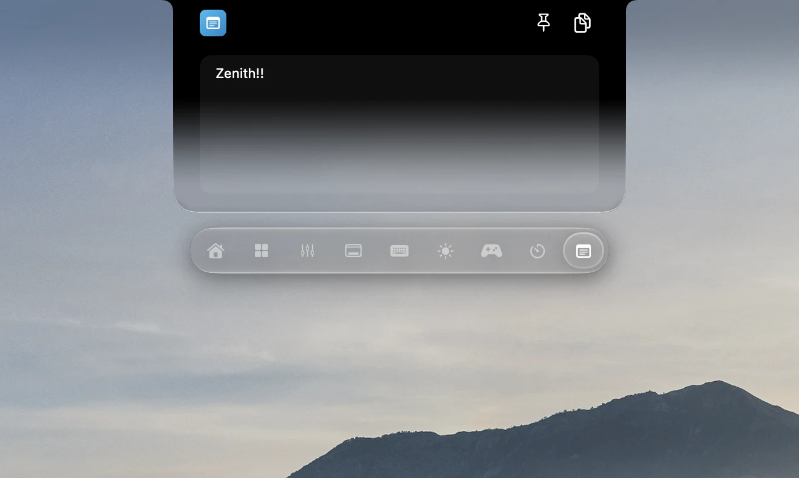
Pin a note above your work.
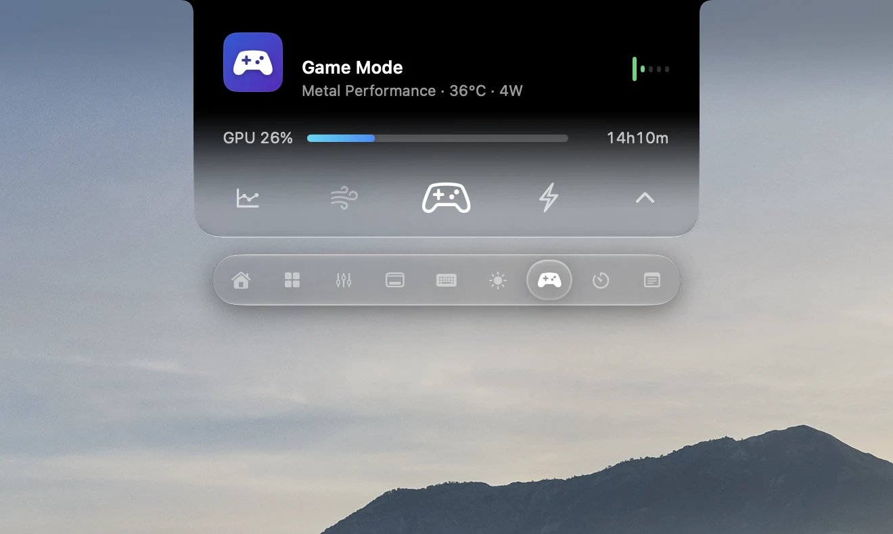
Game tools and live performance at a glance.
Turn down one app, not your whole Mac.
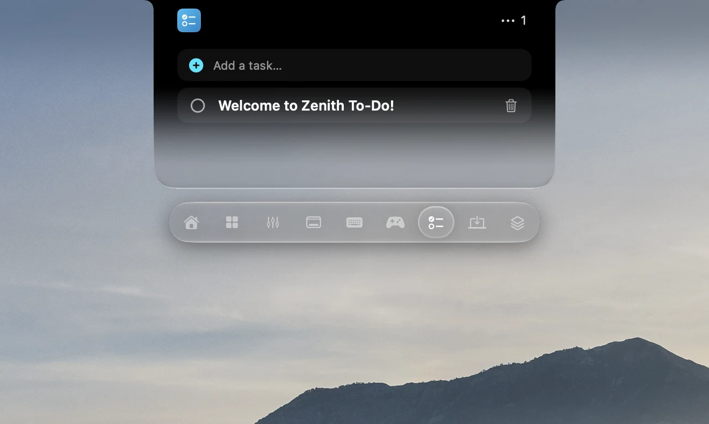
Keep your next step in sight.
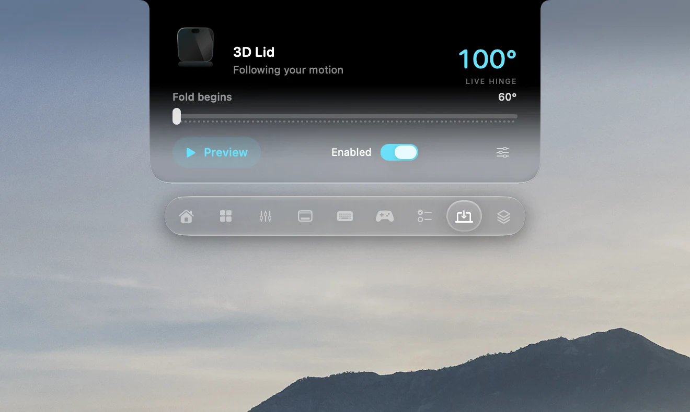
Your desktop moves with your MacBook.
Your island. Your shape. Your transparency.
Explore the full feature guide, including setup and availability.
THE REST OF YOUR LITTLE WORLD
Turn on what you love.
Find the rest when you need it.
A LITTLE UNEXPECTED.
As your lid moves, your desktop folds into the moment.
Web recreation of Zenith’s desktop effect · Compatible MacBook required
FEEL-GOOD FEEDBACK
Choose a switch profile, then tap any key or type directly on your keyboard.
Tap any key to hear it. On a phone, swipe the keyboard to reach more keys.
Browser sound preview. Typing is never saved. Only active while this keyboard is focused.
FROM THE SAME MAKER
More independent apps by Harsh Paun.
For the screen you’re on, and the next one.
 iOS · iPadOS
iOS · iPadOSA proper home for movie night. A poster library, subtitles, and playback tools for iPhone and iPad.
Your own videos, photos, and music. From your devices to the big screen over local Wi-Fi.
 macOS · iOS
macOS · iOSGive your workspace a little more room. Use your iPhone or iPad as a second display for Mac.
Zenith 1.3.1 / Free public beta
Apple silicon · macOS 26 or later · approx. 369 MB
Developer ID signed. Apple-notarized.
Ready to make your Mac a little more yours.
Open the DMG. Drag Zenith into Applications.
Follow onboarding for permissions, then choose your tools and appearance.
Automatic updates are built in. Manual checks are always available in Settings.
The current release is for Apple silicon Macs running macOS 26 or later. A physical notch is optional: you can use a floating island on your display. Hardware-specific features, including lid sensing and charging controls, need compatible hardware.
Zenith is currently a free public beta. There is no purchase required to use this release. The other apps from the same creator have their own App Store pricing.
No. Zenith shows motion artwork and lyrics when compatible data is available for the track. Word highlighting requires real word-level timestamps; otherwise, lyrics use the timing available. Still artwork remains the fallback.
Onboarding guides input permissions. Other tools can need Camera, Calendar, Automation, audio or display-capture access. Review each macOS prompt. Read compatibility and privacy details.
Zenith checks for and installs signed updates automatically while it is running, online, and able to update its installation. Your settings are retained. If an older installation is stuck, use the separate Zenith Updater or download the latest DMG.
Some gaming integrations, notifications, calls, hardware controls and camera-based recognition are still being validated. The feature guide separates these from standard tools and previews. Zenith’s optical recognition is not Apple Face ID or equivalent security.